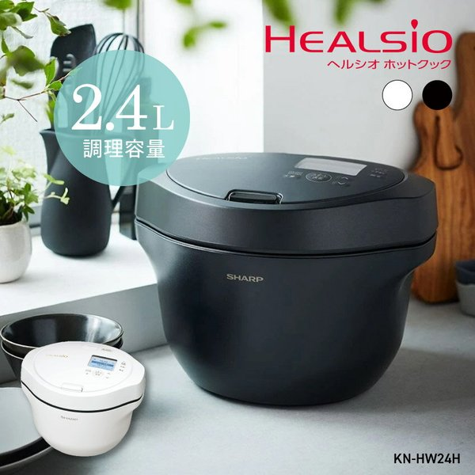
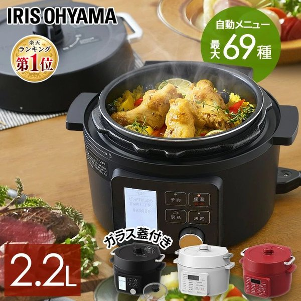
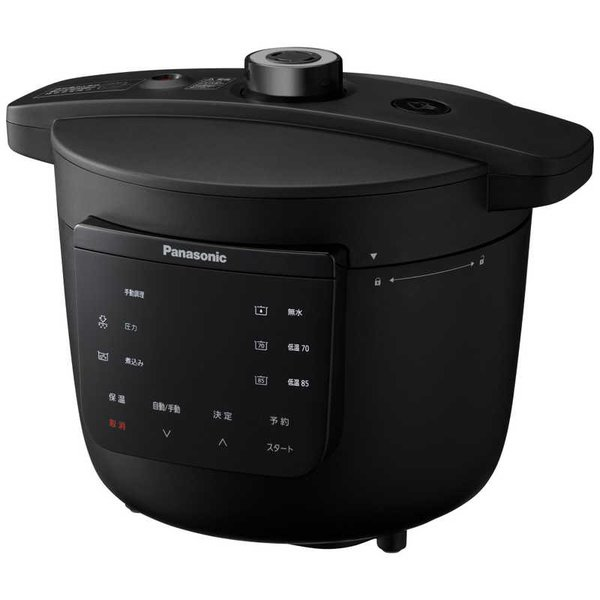
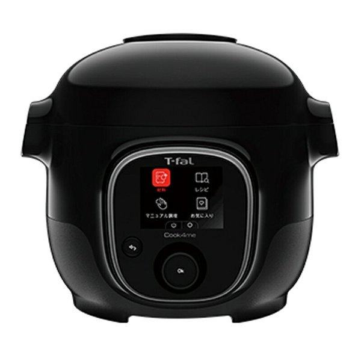
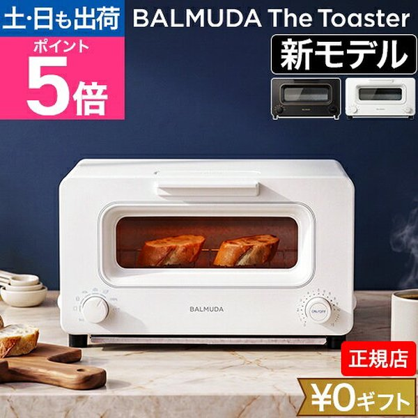
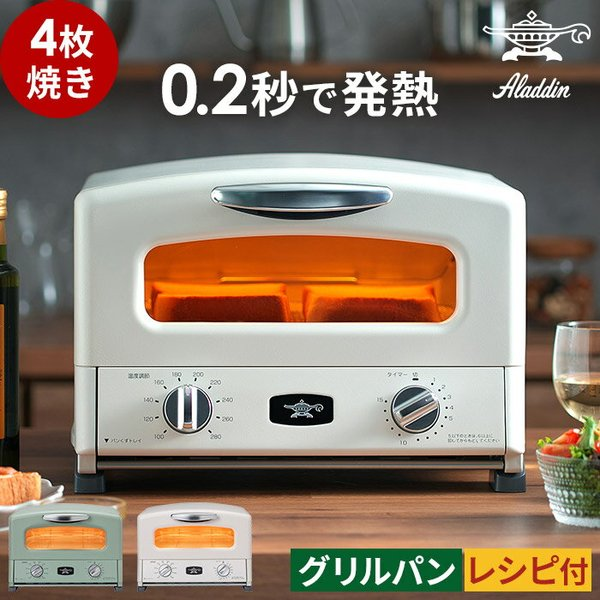
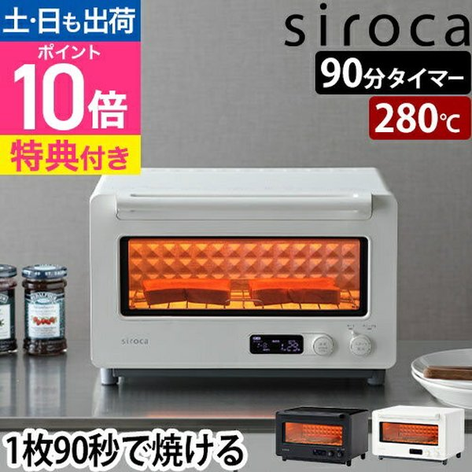
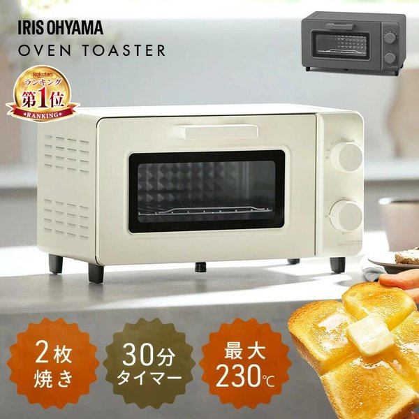
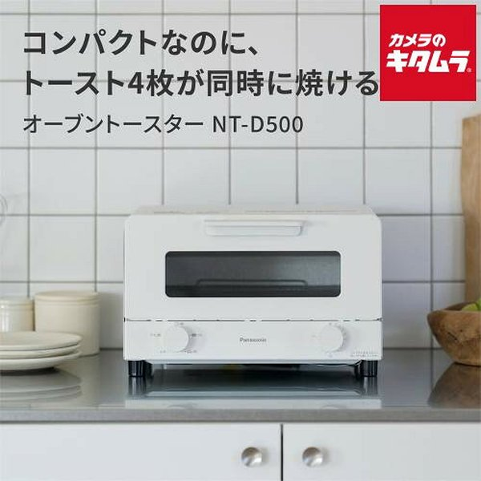
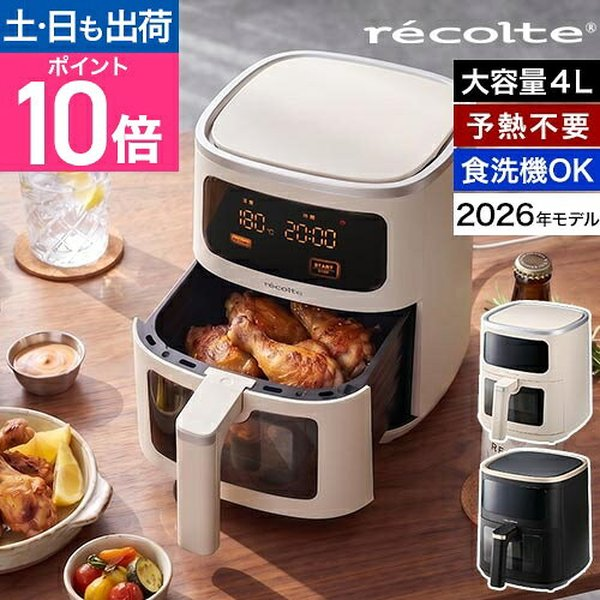

【2026年最新】時短調理家電10選｜電気圧力鍋・ホットクック・トースター比較
平日の夜に料理へ使える時間は、思っているより短い。そこで効くのが「火の前に立たなくていい家電」です。材料を入れてボタンを押せば、その間に別のことができる調理家電は、時短というより時間の使い方を変えてくれます。
電気圧力鍋は煮込みを数十分短縮し、ホットクックはかき混ぜまで自動。トースターは朝食と温め直しを一気に引き受けます。何を時短したいか（煮込み／炒め／朝食）を決めてから選ぶと、置き場所と予算の無駄が減ります。
本記事では、楽天市場で人気・高評価の時短調理家電10選を、実売価格とレビュー評価つきで写真付き比較します。
- おすすめ10選 スペック・特徴比較表
- BEST 1｜ヘルシオ ホットクック KN-HW24H（2.4L）
- BEST 2｜電気圧力鍋 2.2L（PC-MA2）
- BEST 3｜電気圧力鍋 NF-PC400-K（ブラック）
- BEST 4｜電気圧力鍋 クックフォーミー 3L（CY8708JP）
- BEST 5｜ザ・トースター KTT02JP
- BEST 6｜グラファイト グリル＆トースター 4枚焼き（AGT-G13B）
- BEST 7｜すばやきトースター ST-2D451
- BEST 8｜オーブントースター 2枚焼き EOT-201-W
- BEST 9｜オーブントースター 4枚焼き NT-D500-W
- BEST 10｜エアーオーブン 4L（RAO-4）
- 【読者負担0円】買わなくても得する無料サービス
- まとめ：時短調理家電10選の選び方
| 順位 | 商品名 | ブランド | 最大の特徴・おすすめ理由 | 総合評価 |
|---|---|---|---|---|
| BEST 1 | ヘルシオ ホットクック KN-HW24H（2.4L） | シャープ（SHARP） | 自動でかき混ぜながら煮込む | 4.65 |
| BEST 2 | 電気圧力鍋 2.2L（PC-MA2） | アイリスオーヤマ | 1万5千円台で買える圧力鍋 | 4.59 |
| BEST 3 | 電気圧力鍋 NF-PC400-K（ブラック） | パナソニック | 炊飯・保温まで1台で対応 | 4.75 |
| BEST 4 | 電気圧力鍋 クックフォーミー 3L（CY8708JP） | ティファール（T-fal） | 炒めから圧力調理まで1台 | 5.00 |
| BEST 5 | ザ・トースター KTT02JP | バルミューダ（BALMUDA） | スチームで中がふんわり焼ける | 4.84 |
| BEST 6 | グラファイト グリル＆トースター 4枚焼き（AGT-G13B） | アラジン（Aladdin） | 0.2秒で発熱し焼きが速い | 4.77 |
| BEST 7 | すばやきトースター ST-2D451 | シロカ（siroca） | 上下ヒーターを切り替えられる | 4.66 |
| BEST 8 | オーブントースター 2枚焼き EOT-201-W | アイリスオーヤマ | 4,000円を切る価格 | 4.30 |
| BEST 9 | オーブントースター 4枚焼き NT-D500-W | パナソニック | 4枚同時に焼ける | 5.00 |
| BEST 10 | エアーオーブン 4L（RAO-4） | レコルト（recolte） | 油を使わず揚げ物が作れる | 4.57 |
ヘルシオ ホットクック KN-HW24H（2.4L）

材料を入れてメニューを選ぶだけで、煮込みや無水調理を自動で仕上げるシャープのホットクック。2.4Lは2〜4人分の作り置きに向く容量で、かき混ぜ工程も本体が担当します。コンロの前に立つ時間を減らしたい人ほど効果が出ます。楽天市場での実売価格は約53,900円（2026年11月時点）。
- 自動でかき混ぜながら煮込む
- 2.4Lで作り置きに向く
- 無水調理で油を使わず仕上げられる
- 本体価格が5万円台と高額
電気圧力鍋 2.2L（PC-MA2）

2.2Lの電気圧力鍋で、加圧・無水・低温・発酵まで1台でこなします。レシピブックが付属し、材料を入れてボタンを押すだけでカレーや煮物ができあがります。まずは手頃な価格で圧力調理を試したい人に向いています。楽天市場での実売価格は約15,800円（2026年11月時点）。
- 1万5千円台で買える圧力鍋
- レシピブック付き
- 加圧・無水・低温調理に対応
- 上位機種より庫内はやや小さい
電気圧力鍋 NF-PC400-K（ブラック）

パナソニックの電気圧力鍋。圧力調理に加えて炊飯や保温までこなす1台で、置き場所を増やさずに調理の幅を広げられます。操作はボタン式でシンプル。毎日のご飯支度を短くしたい人の入門機として選びやすいモデルです。楽天市場での実売価格は約20,363円（2026年11月時点）。
- 炊飯・保温まで1台で対応
- 家電メーカー製で安心感がある
- 操作がシンプル
- 販売店によって価格差が大きい
電気圧力鍋 クックフォーミー 3L（CY8708JP）

炒める・煮込む・圧力調理を1台で行うティファールのクックフォーミー。3Lサイズで4人分の煮込み料理が作れ、付属レシピの数が多いのも特長です。工程の多い料理をボタン一つにまとめたい人に向いています。楽天市場での実売価格は約37,980円（2026年11月時点）。
- 炒めから圧力調理まで1台
- 3Lで4人分が作れる
- レシピ数が多い
- 本体が大きく置き場所を取る
ザ・トースター KTT02JP

スチームと温度帯を細かく制御して、食パンを外はカリッと中は水分を残したまま焼き上げるバルミューダのトースター。冷凍パンやクロワッサンなど、パンの種類に合わせたモードを選べます。朝食のパンの満足度を上げたい人に向いています。楽天市場での実売価格は約39,600円（2026年11月時点）。
- スチームで中がふんわり焼ける
- パンの種類別モード
- レビュー450件超の人気機
- 4万円近い価格で1〜2枚焼き専用
グラファイト グリル＆トースター 4枚焼き（AGT-G13B）

グラファイトヒーターの遠赤外線で、短時間でトーストを焼き上げるアラジンの4枚焼きトースター。焼き目が付きやすく、グリル調理にも使えるので魚や肉の調理にも回せます。家族で朝食を食べる家庭ほど、4枚焼きの便利さが効きます。楽天市場での実売価格は約22,220円（2026年11月時点）。
- 0.2秒で発熱し焼きが速い
- 4枚同時に焼ける
- グリル調理にも使える
- 本体が大きく重量がある
すばやきトースター ST-2D451

上下ヒーターの切り替えとコンベクションで、トーストからグラタン、焼き芋までこなすシロカのトースター。2枚焼きサイズながら多機能で、揚げ物の温め直しにも使えます。1台でオーブン代わりを済ませたい人に向いています。楽天市場での実売価格は約19,800円（2026年11月時点）。
- 上下ヒーターを切り替えられる
- 揚げ物の温め直しに使える
- 2枚焼きサイズで置きやすい
- 機能が多いぶん操作はやや複雑
オーブントースター 2枚焼き EOT-201-W

2枚焼きのコンパクトなオーブントースター。80℃から230℃まで無段階で温度を合わせられ、タイマーも付いて、トーストから総菜の温めまで使えます。4,000円を切る価格なので、一人暮らしの最初の1台やサブ機にちょうどいい商品です。楽天市場での実売価格は約3,980円（2026年11月時点）。
- 4,000円を切る価格
- 80〜230℃の無段階調整
- 角皿付きで総菜も温められる
- 2枚焼きなので家族向きではない
オーブントースター 4枚焼き NT-D500-W

4枚焼きのオーブントースターで、食パンが一度に4枚焼けます。庫内が広く、グラタン皿やピザも入るサイズなので、家族の朝食をまとめて用意したいときに便利です。シンプルな操作で、毎日使う道具としての扱いやすさが強みです。楽天市場での実売価格は約9,990円（2026年11月時点）。
- 4枚同時に焼ける
- 庫内が広くグラタンも入る
- 1万円を切る価格
- 庫内の掃除は手間がかかる
エアーオーブン 4L（RAO-4）

油を使わずに揚げ物が作れるエアーオーブン。4Lの庫内で唐揚げや焼き魚、総菜の温め直しまでこなせ、部品は食洗機に対応します。揚げ油の後片付けから解放されたい人に向いています。楽天市場での実売価格は約16,500円（2026年11月時点）。
- 油を使わず揚げ物が作れる
- 4Lの大容量
- 部品が食洗機対応
- 揚げたての食感は油調理に一歩譲る
この記事の商品を買う前に、まずは無料で得する選択肢をチェック。どれも登録・利用は0円で、無料期間中に解約すれば料金はかかりません。読みたい雑誌がある人、ポイントを貯めたい人、アンケートなら気軽という人、それぞれに合うものを選べます。
初回31日無料・無料期間中に解約すれば0円 → 楽天ポイントモール｜登録無料で毎日ポイ活
買い物なしでもポイントが貯まる無料サービス → 楽天インサイト｜アンケートに答えてポイント
登録無料・すきま時間のアンケートで貯まる → 楽天カード｜年会費永年無料
新規発行・年会費ずっと0円 →
4つのサービスの違いと使い分けは「出費0円で得する！買わずにポイントが貯まる無料サービス厳選4選」でまとめています。
💡 まとめ：時短調理家電10選の選び方
時短家電は、買って終わりではなく「定番メニューを3つ決める」ところまでがセットです。圧力鍋ならカレー・煮物・角煮、トースターならトーストと総菜の温め。この3つが回り始めると、平日の調理時間ははっきり短くなります。ブラックフライデーでは型落ちの上位機種が下がることもあるので、価格の推移を見ながら狙うのがおすすめです。
楽天市場では「5と0のつく日」や「お買い物マラソン」などのキャンペーンに合わせて購入すると、ポイント還元が最大化してお得に手に入ります。ぜひチェックしてみてくださいね。